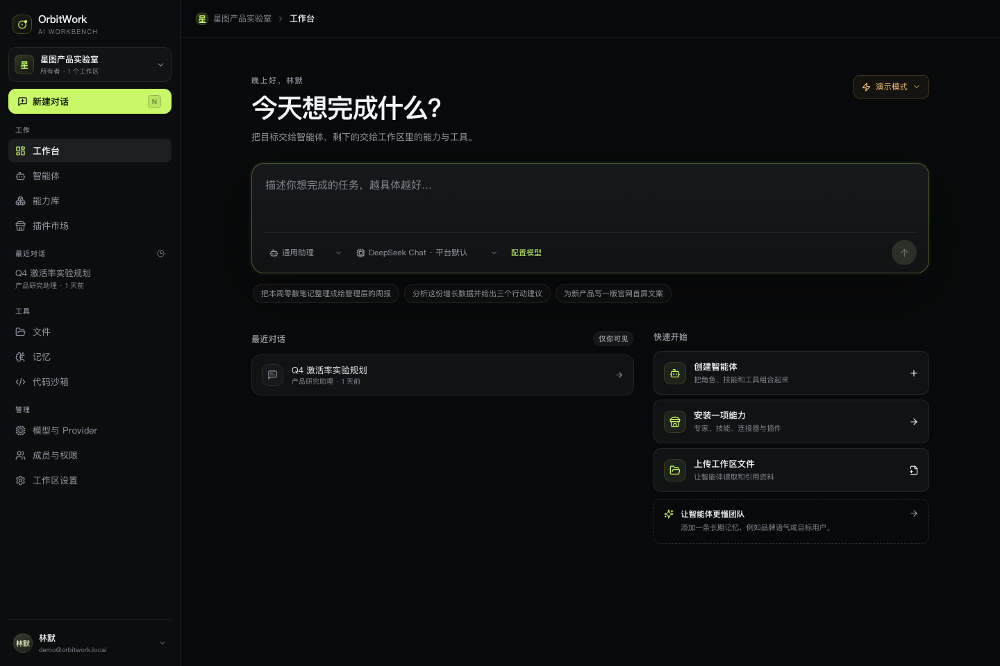

◎ ORBITWORK 2.0 · RELEASE DOCUMENTATION
把方法变成能力，
把能力交给智能体。
OrbitWork 是一个可私有化部署的多租户 AI 智能体工作台。对话、专家、技能、连接器、插件市场、权限与审计，收敛为一条可运行、可测试、可部署的产品链路。
01 / PRODUCT
产品文档
定位、对标、用户旅程、全新信息架构、模型与 Provider、功能规格、权限模型、验收清单与路线图。
阅读产品文档 →
02 / ENGINEERING
架构与技术文档
C4、数据模型、租户不变量、智能体运行时、沙箱威胁模型、联网与文件子系统、API、测试与阿里云部署手册。
阅读架构文档 →
03 / WHAT'S NEW
v2.0 模型与 Provider
工作区管理员可以配置 OpenAI 兼容 Provider、模型、默认项与 API Key；密钥加密、只写不读。
查看模型配置 →
04 / WHAT'S NEW
v2.0 全新工作台
“工作 / 工具 / 管理”三段式导航；首页只保留一个主输入框、最近对话和快速开始。
查看体验设计 →
本地 Docker 启动
cp .env.example .env
# 修改 APP_SECRET / 管理员密码
docker compose up -d --build
open http://localhost:8080本地演示账号
demo@orbitwork.local / Demo!2026
管理员：admin@orbitwork.local / OrbitWork!Admin2026（Docker 首次启动读取 .env；生产必须修改）
演示账号需在 .env 设置 SEED_DEMO=true（仓库内本地 .env 已启用）。未配置 LLM_API_KEY 时自动进入“演示模式”，可体验完整 UI、权限、市场与沙箱；配置后即真实模型流式对话。
